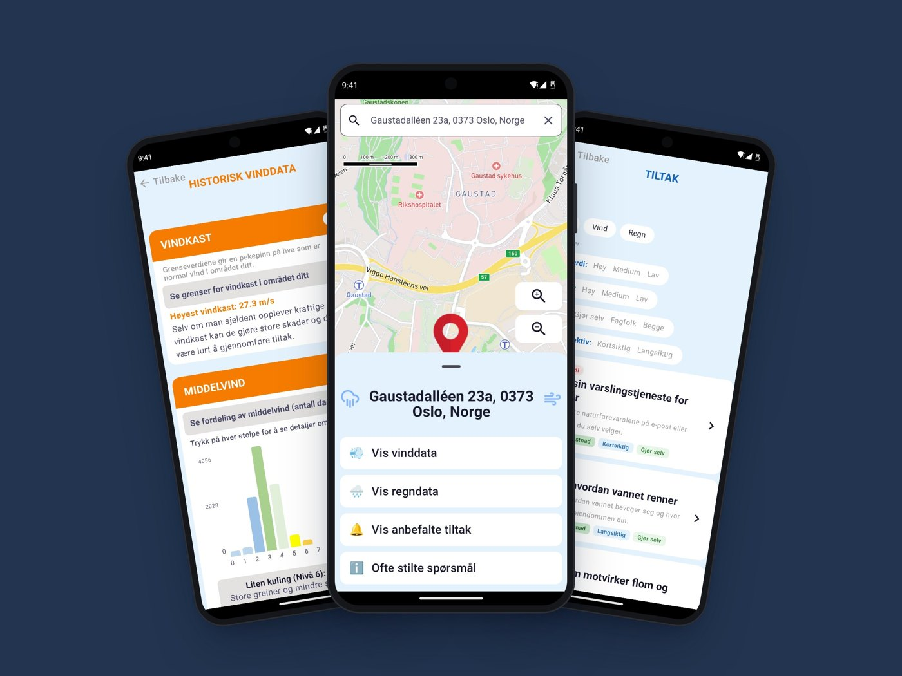
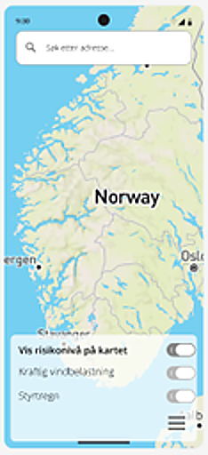
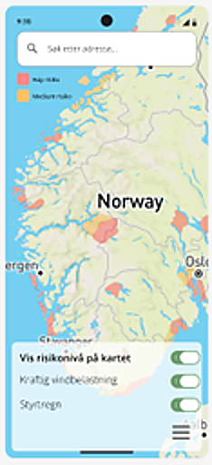
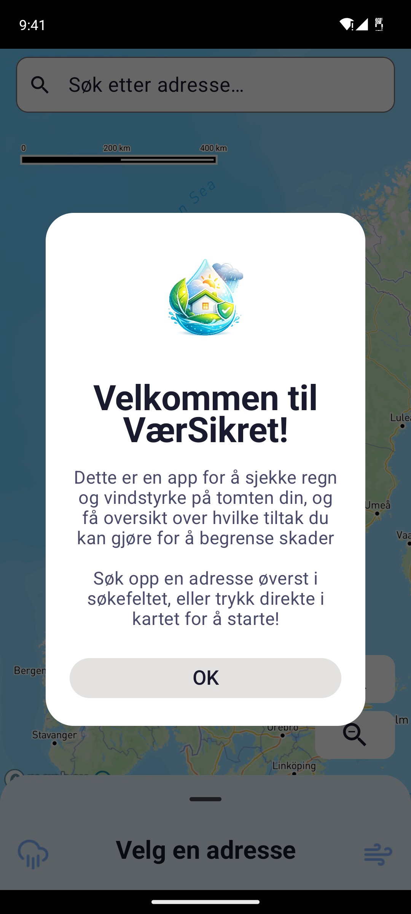
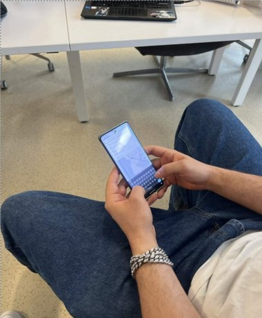
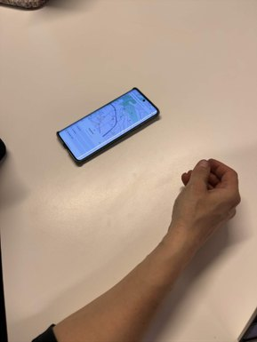
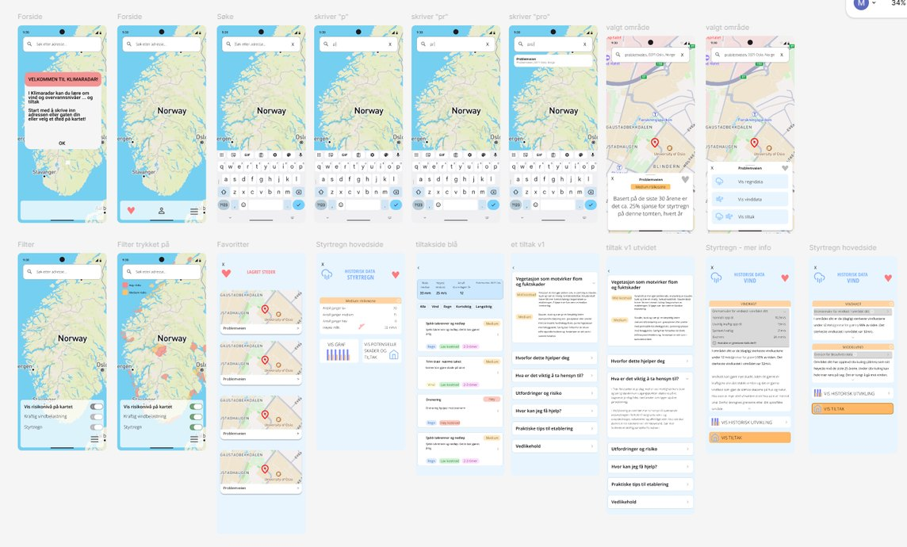
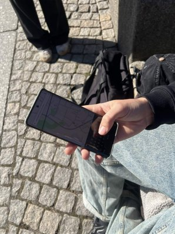
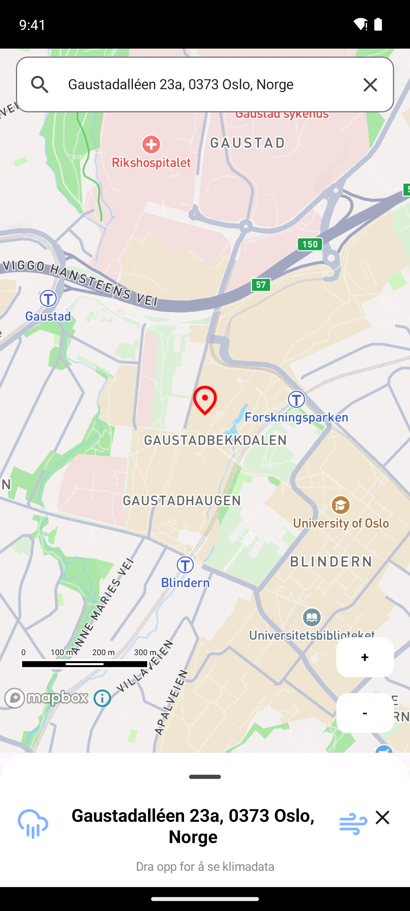
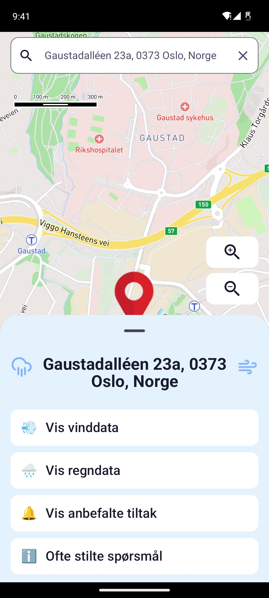

01 · IN2000 · Vår 2026
En Android-app som viser boligeiere hvor mye vind og styrtregn hjemmet deres har vært utsatt for, og hva de kan gjøre for å beskytte det.

Storm og styrtregn blir vanligere, men boligeiere har ingen enkel måte å se hva deres egen adresse har vært utsatt for.
Laget en Android-app med data fra Meteorologisk institutt (MET), formet av en spørreundersøkelse, geriljatester og en brukertest.
Søk opp en adresse, se vind- og regnhistorikken forklart med enkle ord og grafer, og få konkrete tiltak du kan filtrere.
IN2000 er et emne i software engineering, ikke design. Vi ble hovedsakelig vurdert på kode, arkitektur og samarbeid, så designet fikk mindre tid enn jeg skulle ønske. Mange designvalg ble tatt raskt, ut fra hva vi hadde tid til.
I uke 3 endret MET beskrivelsen av caset, og målgruppen vår passet ikke lenger. Vi mistet to og en halv uke med arbeid: en spørreundersøkelse, et intervju og analysen. MVP-en skulle leveres halvannen uke senere.
Turgåere og snøskredfare
Den første retningen vår, med en spørreundersøkelse, et intervju og en plan bak.
én uke til å bytte retning
Ny målgruppe, nye datakilder, en ny spørreundersøkelse (ikke tid til intervjuer) og en fungerende MVP.
boligeiere, vind og styrtregn
Retningen vi jobbet videre med resten av prosjektet.
Velg den raskeste metoden som fortsatt gir reelle svar. En spørreundersøkelse var den eneste undersøkelsen vi rakk på én uke.
Det er frustrerende å miste tid og arbeid. Å snakke åpent om det i teamet fikk oss raskere videre enn å bare presse på.
Korte sprinter gjorde endringen håndterbar. Vi planla på nytt i løpet av én sprint, så vi holdt tidsplanen og leverte en solid MVP.
Vi trodde boligeiere var mest opptatt av flom og skred.
Jeg planla, gjennomførte og analyserte spørreundersøkelsen. Svarene pekte et annet sted: folk ville vite om vind og styrtregn, så det ble fokuset for appen.
Andel som svarte at temaet var «ganske» eller «svært» viktig for boligen sin.


Fra Figma-prototypen min: risikolaget av og på.
Spørreundersøkelsen viste at folk ønsket et fargekodet risikokart. Vi jobbet lenge med det, men vi klarte ikke å beregne risikonivåer på en pålitelig måte, og MET var enig i at en boligeier først og fremst bryr seg om sin egen tomt. Et rødt område på et kart oppleves som et faktum.
Å vise en risikofarge vi ikke kunne stå inne for, hadde vært verre enn å ikke vise noen. Vi brukte heller enkel tekst og grafer, som brukerne også hadde ønsket seg.

Trykk på spill av, eller trykk deg rundt på telefonen selv.
Her vises de viktigste skjermene, én etter én.
Med lite tid til design involverte vi brukere der vi kunne: en spørreundersøkelse, geriljatester og én lengre økt der en bruker testet appen og hjalp til med designvalg.
01
Hva boligeiere vil vite. Den endret fokuset for hele appen.

02
Folk rundt på campus prøvde MVP-en. De slet med å finne adressekortet og syntes den så for teknisk ut.

03
Én økt med én bruker: tre oppgaver med tidtaking og think-aloud, deretter hjalp brukeren med å bestemme hvordan tiltakssiden skulle se ut, og til slutt et kort intervju.
Jeg designet alle skjermene og flyten mellom dem i Figma før teamet bygde dem.

Etter geriljatestene på campus gjorde vi justeringer i appen. Så gjennomførte jeg en moderert brukertest med think-aloud. Brukeren skulle finne informasjon om sin egen adresse, og jeg tok tiden på hver oppgave.
Oppgave 1: finn vindstyrken på adressen din
Hun søkte opp adressen og fortsatte å lete på kartet. Hun la ikke merke til at kortet nederst måtte dras opp.
Oppgave 2: finn styrtregn for adressen din
Da hun visste hvor kortet var, gikk dette med en gang.
Oppgave 3: finn tiltak for å beskytte hjemmet ditt
Det tok lang tid å komme seg ut av regnsiden igjen.

geriljatest 2Før: versjonen vår fra 22. april. Etter: den ferdige appen.


1 / 5 · ingen så kortet
Jeg hadde ansvaret for designet, utviklerne for backend og arkitektur, og vi møttes på midten. De var med på innsiktsarbeid og testing, og jeg skrev også kode. Det betydde at jeg måtte forklare designvalg på en måte utviklerne kunne bygge ut fra, og lære nok om det tekniske til å vite hva som var realistisk å gjennomføre.
Dette bygde teamet med:
Kotlin, Jetpack Compose, MVVM, MET Frost API, Mapbox, Figma og Scrumban.
Utviklerne implementerte dette, og hele teamet fulgte WCAG 2.1-retningslinjene sammen.
Teksten kan forstørres til 200 % uten at oppsettet går i stykker.
Fargekontrasten er sjekket med WebAIM, i både lys og mørk modus.
Følger telefonens innstilling for lys eller mørk modus.
Store trykkflater og tydelige sidetitler for skjermlesere.
Basert på WCAG 2.1.
Jeg var eneste designer på teamet og var med i hele prosjektet. Dette var mine deler:
Jeg ville gjort mer innsiktsarbeid i starten, og testet før vi implementerte alt. Selv en rask test av Figma-prototypen ville fanget de enkle feilene, som det skjulte kortet, før de ble bygget.
Design går i et annet tempo enn utvikling. Funksjoner ble ofte bygget før jeg rakk å teste dem. Neste gang ville jeg avtalt fra første dag når vi tester, og hvem som godkjenner designvalg.
Neste prosjekt
TimeBox →